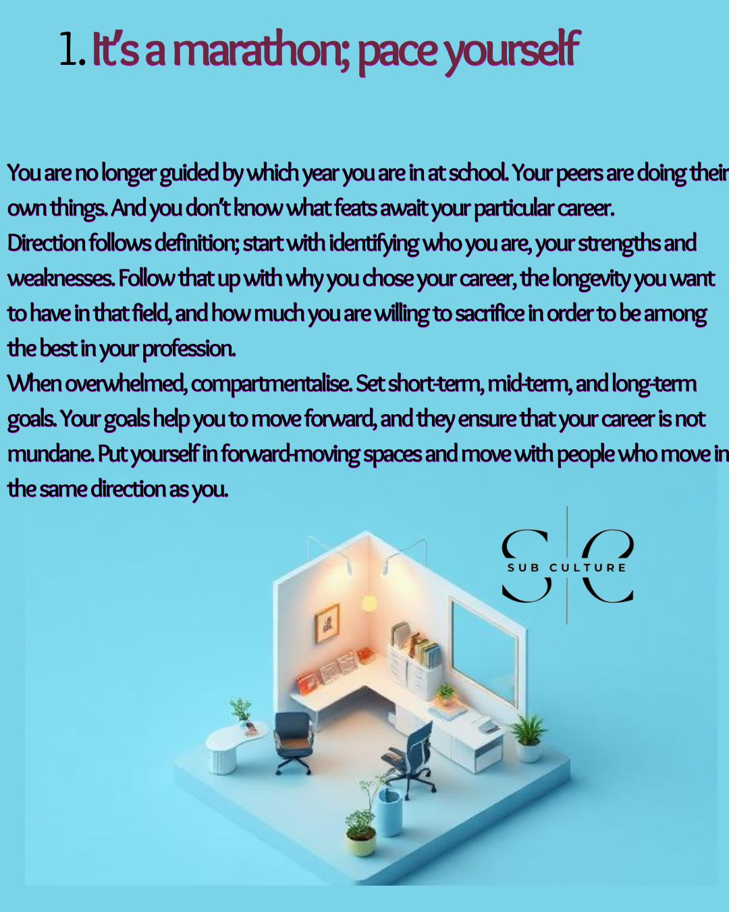
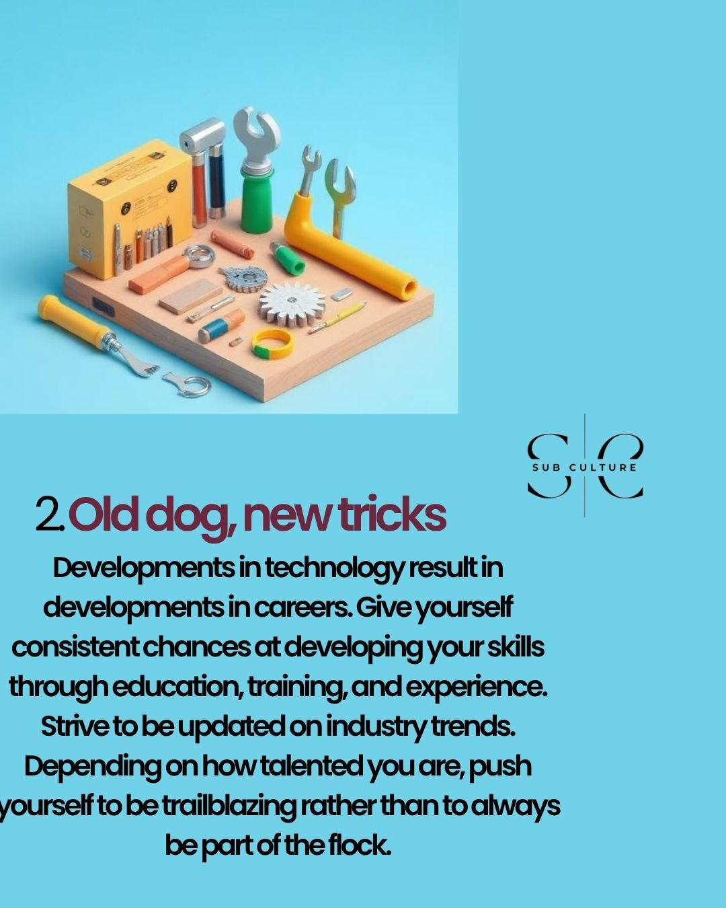
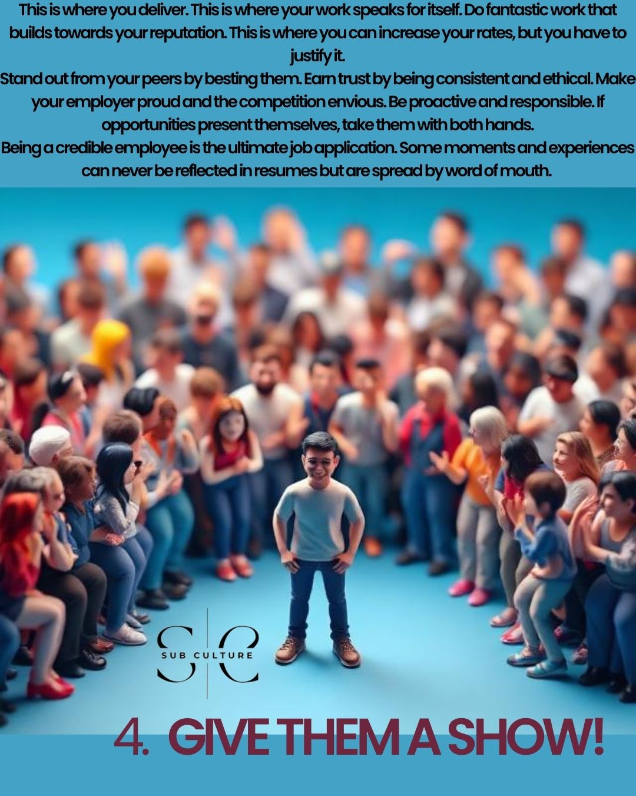
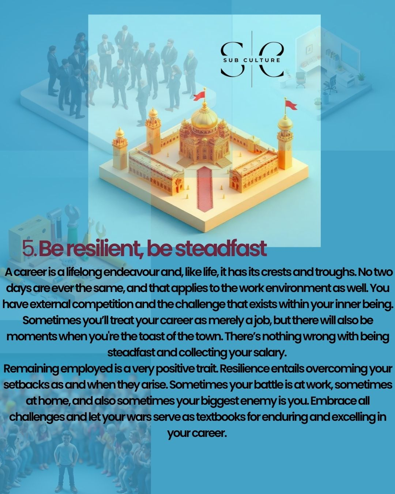

Careers
Careers
A key difference between having a job and a career is that a job serves a fundamental function: a duty undertaken with the sole purpose of earning remuneration.
A career tends to be a lifelong occupation with various opportunities for growth. Careers are more desirable because they come with status, various financial and corporate benefits, and other opportunities that facilitate long-term commitment.
For as well as we have commended having a career, it is also wise to underline that careers require a lot of sacrifice; in terms of education, physical and mental health, and the lifelong commitment they demand. Because of this, we decided to share some steps that can help you have a long, successful career.
It's a marathon; pace yourself
You are no longer guided by which year you are in at school. Your peers are doing their own things. And you don't know what feats await your particular career.
Direction follows definition; start with identifying who you are, your strengths and weaknesses. Follow that up with why you chose your career, the longevity you want to have in that field, and how much you are willing to sacrifice in order to be among the best in your profession.
When overwhelmed, compartmentalise. Set short-term, mid-term, and long-term goals. Your goals help you to move forward, and they ensure that your career is not mundane. Put yourself in forward-moving spaces and move with people who move in the same direction as you.

Old dog, new tricks
Developments in technology result in developments in careers. Give yourself consistent chances at developing your skills through education, training, and experience. Strive to be updated on industry trends. Depending on how talented you are, push yourself to be trailblazing rather than to always be part of the flock.

Have a sense of Ubuntu
A person is because of people. Networking at your place of employment, attending industry events, and developing yourself as a person helps your brand become more visible and attractive.
Having mentors is also crucial. Mentors tend to share pro-tips and are well-equipped to understand your frustrations, and they can boost your career, depending on how connected they remain to your industry.
Give them a show!
This is where you deliver. This is where your work speaks for itself. Do fantastic work that builds towards your reputation. This is where you can increase your rates, but you have to justify it.
Stand out from your peers by besting them. Earn trust by being consistent and ethical. Make your employer proud and the competition envious. Be proactive and responsible. If opportunities present themselves, take them with both hands.
Being a credible employee is the ultimate job application. Some moments and experiences can never be reflected in resumes but are spread by word of mouth.

Be resilient, be steadfast
A career is a lifelong endeavour and, like life, it has its crests and troughs. No two days are ever the same, and that applies to the work environment as well. You have external competition and the challenge that exists within your inner being. Sometimes you'll treat your career as merely a job, but there will also be moments when you're the toast of the town. There's nothing wrong with being steadfast and collecting your salary.
Remaining employed is a very positive trait. Resilience entails overcoming your setbacks as and when they arise. Sometimes your battle is at work, sometimes at home, and also sometimes your biggest enemy is you. Embrace all challenges and let your wars serve as textbooks for enduring and excelling in your career.
